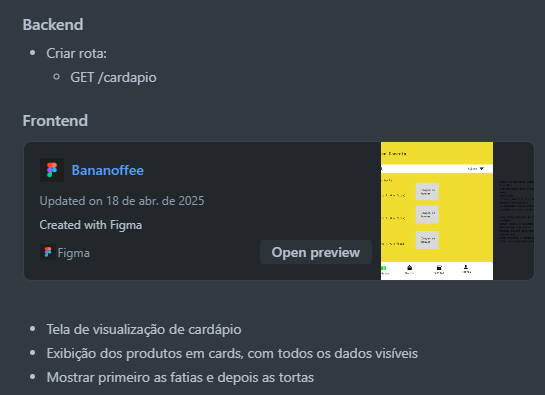

Aplicação do DoR, DoD e Critérios de Aceitação no Projeto
Ferramenta Utilizada
Utilizamos o Trello como ferramenta de apoio ao gerenciamento das histórias de usuário (US) do projeto. Cada cartão de US no Trello representa uma funcionalidade ou requisito do sistema e contém:
- Checklist de Definition of Ready (DoR)
- Checklist de Definition of Done (DoD)
- Critérios de aceitação e Regras de negócio
- Link direto para o protótipo correspondente
- Voce pode ver os protótipos desenvolvidos aqui
- Anexos e comentários da equipe para discussão
- Etiquetas que indicam o envolvimento de Front-End e Back-End
- Indicação dos responsáveis e data de entrega
- O número correspondente da Sprint na qual a US vai ser realizada
- Valor do Story Points dessa US

Organização do Quadro Trello
O quadro foi estruturado com as seguintes listas (colunas):
- Backlog de Projeto – Contém todas as US identificadas
- Backlog da Sprint – US selecionadas para a sprint atual
- Em andamento – US sendo implementadas
- Em Aceitação – US finalizadas aguardando validação
- Feito (Validado) – US entregues e aprovadas
- Melhoria – Itens de melhoria contínua e bugs
- Leitura – Materiais de apoio sobre Scrum e processos
Definition of Ready (DoR) e Definition of Done (DoD)
Para cada história de usuário (US) foi atribuído um checklist personalizado contendo todos os critérios definidos no nosso Definition of Ready (DoR) e Definition of Done (DoD).
Esse processo garantiu que nenhuma US fosse iniciada sem estar totalmente clara e validada, e que só fosse considerada concluída após cumprir todos os critérios de qualidade e validação final.
-
Uma US só era movida para a coluna "Em andamento" quando todos os itens do checklist de DoR estavam completos, ou seja, quando a história estava bem definida, priorizada, estimada e com critérios de aceitação e protótipo vinculados.
-
Após ser implementada, a US era movida para "Em Aceitação", onde permanecia aguardando o feedback da equipe e do cliente. Somente após a validação completa e a checagem de todos os itens do checklist de DoD, ela era movida para a coluna "Feito (Validado)".
Itens comuns de cada checklist
Você pode visualizar os checklists completos de DoR e DoD utilizados no projeto acessando este link: DoR e DoD
Esse controle por checklist, feito dentro de cada cartão do Trello, trouxe transparência, rastreabilidade e organização ao fluxo de trabalho da equipe.
Critérios de Aceitação e Regras de Negócio
Cada história de usuário (US) possui dois elementos fundamentais para garantir a clareza do que deve ser implementado:
-
Critérios de Aceitação: definem de forma objetiva o que precisa estar funcionando para que a funcionalidade seja considerada aceita pelo Product Owner. Servem como base para testes e validação da entrega.
-
Regras de Negócio: representam o conjunto de condições, restrições e comportamentos específicos do domínio da aplicação que precisam ser respeitados no funcionamento da US.
Essas informações estão descritas diretamente em cada cartão do Trello, dentro do corpo descritivo dos Critérios de Aceitação. Essa separação ajudou a equipe a entender o que deve ser entregue e como deve funcionar, de forma clara e verificável.
Essa prática garantiu maior rastreabilidade das funcionalidades, facilitando tanto o desenvolvimento quanto a validação e aceitação final de cada entrega.
Evidências Visuais
Abaixo estão capturas de tela de algumas das histórias de usuário no Trello, evidenciando:
- O uso dos checklists de Definition of Ready (DoR) e Definition of Done (DoD)
- A definição clara dos critérios de aceitação e regras de negócio
- A vinculação com o protótipo correspondente
- O acompanhamento do progresso via movimentação entre as colunas do Trello
Esta seção apresenta apenas as histórias de usuário que compuseram o MVP do sistema, em ordem de entrega.
US01 - Realizar cadastro no sistema
US02 - Realizar login no sistema


US03 - Alterar conta de usuário

US04 - Excluir conta de usuário

US05 - Adicionar um item no cardápio digital


US06 - Excluir um item no cardápio digital

US07 - Alterar um item no cardápio digital


US08 - Visualizar o cardápio digital

US09 - Adicionar produtos na sacola virtual de compras

US11 - Alterar os produtos da sacola virtual


US10 - Remover os produtos da sacola virtual

US16 - Realizar pedido

US13 - Visualizar um pedido


US15 - Alterar chave pix da doceria

US20 - Realizar pagamento de pedido via pix

Histórico de Versão
| Data | Versão | Descrição | Autor |
|---|---|---|---|
| 13/07/2025 | 1.0 | Criação do Documento | Bruno Garcia |
| 14/07/2025 | 1.1 | Ajustes de algumas imagens | Bruno Garcia |